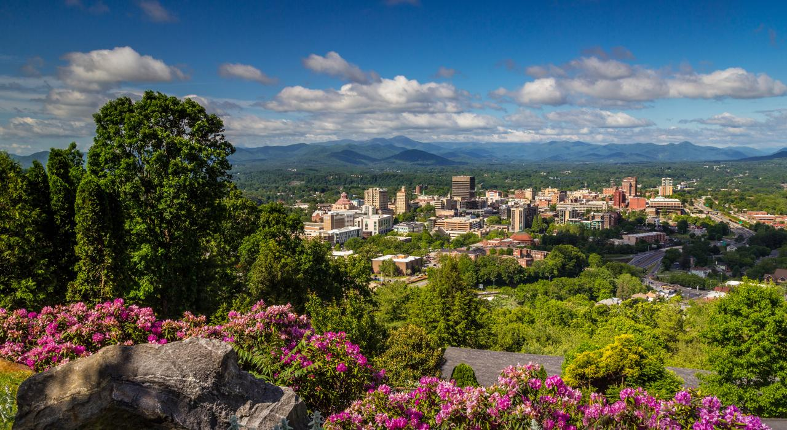

Welcome to Asheville!
Immersed deep within the scenic vistas of the Blue Ridge Mountains, Asheville in North Carolina splendidly upholds its image as a dynamic and culturally thriving city. Renowned for harmonizing historic allure with progressive gusto, this robust locale never fails to impress! With an animated arts sphere, distinct architecture choices, and generous locals - it is always buzzing with creative energy. Artists find their muse here; musicians get inspired, while outdoor adventurers feel at home! The famed Biltmore Estate calls Asheville home, too; being the most prominent privately-owned property across America, it tastefully injects luxe into local life here. The natural resplendence is beautifully balanced by diversity-filled gourmet retreats that offer everything from fine dining experiences to locally brewed beverages. Asheville appreciates art and holds sustainability close to heart – twin attributes that give visitors pause initially, then hook them indefinitely! Be ready for anything when you visit...in essence, escape mundane reality because every moment spent amid these glorious stretches of Appalachian beauty fuels inspiration where typically none would have existed prior!
Land of The Sky
| # | FACTS | DETAILS |
|---|---|---|
| 1 | City's Population | 93,776 |
| 2 | Year Incorporated | 1797 |
| 3 | Region | West-Central North Carolina |
| 4 | Classification | Urban |
| 5 | Average Income | $41,343 (Above State Average) |